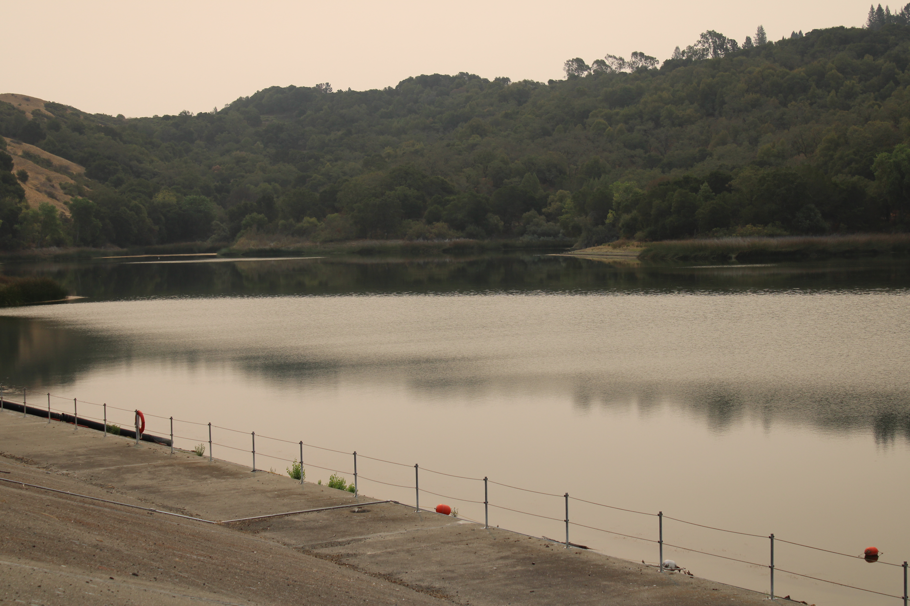

Lafayette Ridge Trail
Lafayette Ridge Trail is a 6.6 mile out and back trail located near Lafayette, California that features beautiful wild flowers and is rated as moderate. The trail offers a number of activity options and is best used from September until May. Dogs are also able to use this trail.